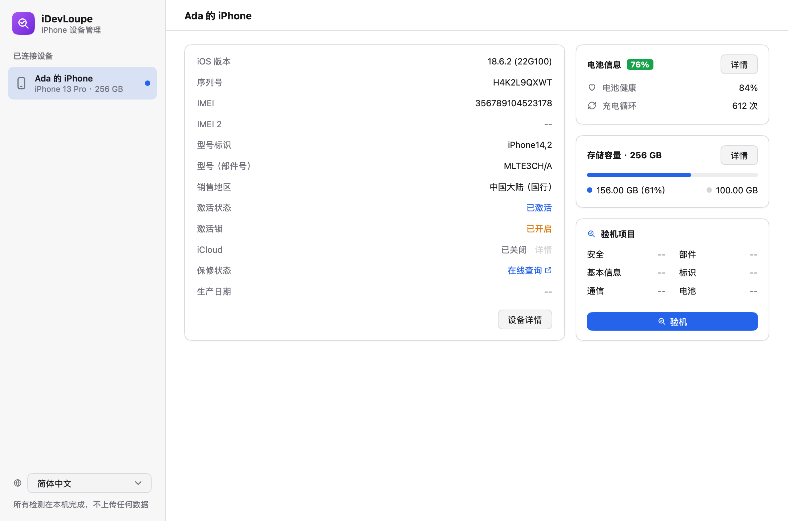

iPhone 设备管理工具
用 Go 与 MyGo 写成的原生桌面应用。目前提供验机：用数据线连上 iPhone，读取它自己报告的硬件、系统与安全信息，只凭证据逐项给出结论。
免费，GPL-3.0 开源 · macOS、Windows 与 Linux · 在本机运行，不上传数据

功能
该查的都查，查不到的直说。每项附上依据，读不到的标为「未知」。
是它说的那台吗
型号、销售地区、机器类型，序列号与 IMEI 格式，不同来源的序列号与型号是否一致。
还有谁能锁住它
查找我的 iPhone（激活锁）、监管模式、设备注册与 MDM、描述文件、激活状态。
电池，实话实说
健康度、循环次数、内阻指标；循环次数低于历史记录或电芯晚于整机生产时，提示更换过。
部件，对照出厂
部件序列号与出厂记录逐一对比，部件生产日期是否晚于整机，面容 ID 自检与 Touch ID 传感器状态。
系统没被动过吗
常见越狱应用与 afc2 服务、启动参数、工程机芯片、内部版 / 测试版系统、基带与 SIM 状态。
只留在你的电脑上
不联网、不上传，手机号与 SIM 卡号不进入报告。报告可复制或导出为文本 / JSON。

下载
最新版本，来自 GitHub Releases。
Linux
推荐需要 usbmuxd：sudo apt install usbmuxd（.deb 会自动安装）。
校验文件与历史版本： SHA256SUMS · 全部版本
怎么用
无需登录，无需在手机上装任何东西。
- 1用数据线连接电脑打开 iDevLoupe，用 USB 线连接 iPhone，设备会自动出现在左侧。
- 2解锁并点「信任」首次连接时，在 iPhone 上选择「信任此电脑」并输入锁屏密码。
- 3查看报告需要关注的项排在最前面。报告末尾的「需人工核对」清单请在手机上逐项确认。
常见问题
macOS 阻止打开 iDevLoupe？
应用未经 Apple 公证，首次打开会被拦截。任选一种放行：在「系统设置 › 隐私与安全性」中点「仍要打开」；或在终端执行 xattr -dr com.apple.quarantine /Applications/iDevLoupe.app。
Windows 弹出 SmartScreen 警告？
程序未经代码签名，SmartScreen 会拦截首次运行：点「更多信息」→「仍要运行」。如果找不到设备，请确认已安装「Apple 设备」或 iTunes，并在 iPhone 上解锁后点「信任」。
能判断屏幕、电池是否原装吗？
不能确定。部件与出厂记录不符、或生产日期晚于整机时，报告会标出更换；但 iOS 自己对部件是否原装的判断无法通过数据线读取，请到「设置 > 通用 > 关于本机 > 部件与维修历史」查看。
会上传我的数据吗？
不会。所有检测在你的电脑上完成，程序不联网。手机号、ICCID、IMSI 读到后立即丢弃，不会出现在报告里。